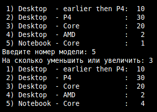

Особенности языка С. Учебное пособие
Примером структуры может послужить любой объект, для которого описывается ряд его характеристик, имеющих значение в данной программе. Например, для книг это может быть название, автор, количество страниц; для окружности — координаты центра, диаметр, цвет. На языке программирования C объявление вышеупомянутых структурных типов данных может выглядеть так:
struct book { char title[50]; char author[30]; int pages; }; struct circle { int x, y; float dia; char color[10]; };
В данном случае мы как бы создаем новый тип данных, но еще не объявляем переменных этих типов. Обратите внимание на точку с запятой в конце объявлений.
Чаще переменные структур объявляются так:
struct circle a, b, c; struct book mybook;
Здесь объявляются три структуры типа circle и одна структура типа book. Можно объявлять типы структур и их переменные по-иному, но мы для избежания путаницы рассматривать другие способы не будем.
Каждая переменная типа circle содержит четыре элемента (или поля) — x, y, dia, color. Можно сказать, что они представляют собой вложенные переменные. Причем эти переменные разных типов. Таким образом переменная-структура позволяет объединить под одним именем ряд разнородных данных. Обычно это нужно для удобства обработки данных. Если нельзя было бы создавать структуры, то пришлось бы создавать множество независимых переменных или ряд массивов, явной взаимосвязи между которыми не было бы. Структуру же позволяют объединять взаимосвязанные данные. Это конечно еще не объектно-ориентированное программирование, но уже взгляд в его сторону.
Объявив переменную структурного типа, мы можем получить доступ к каждому ее элементу для присваивания, изменения или получения значения:
a.x = 10; a.dia = 2.35; printf("%.2f ", a.dia);
Значение элементов структуры можно сразу определять при объявлении переменной, что похоже на инициализацию массивов:
struct book lang_c = {"Language C", "Ritchi", 99};
Значение переменной-структуры можно присвоить переменной того же типа:
struct book { char *title, *author; int pages; }; struct book old, new; old.title = "GNU/Linux"; old.author = "people"; old.pages = 20213; new = old; new.pages += 2000; printf("%d, %d\n", old.pages, new.pages);
В четвертой строке кода данные переменной old присваиваются new. В итоге вторая структура содержит копию данных первой. То, что можно выполнять присваивание по отдельным полям должно быть понятно.
Задание
Придумайте и опишите структуру. Объявите переменные этого типа. Присвойте им значения и выведите на экран.
Структуры-переменные можно передавать в функции в качестве параметров и возвращать их оттуда. Структуры передаются по значению, как обычные переменные, а не по ссылке, как массивы.
Рассмотрим программу, в которой одна функция возвращает структуру, а другая — принимает ее в качестве параметра:
#include <stdio.h> #include <math.h> struct circle { int x, y; float dia; char color[10]; }; struct circle new_circle(); void cross (struct circle); main () { struct circle a; a = new_circle(); cross(a); } struct circle new_circle() { struct circle new; printf("Координаты: "); scanf("%d%d", &new.x, &new.y); printf("Диаметр: "); scanf("%f", &new.dia); printf("Цвет: "); scanf("%s", new.color);//gets(new.color); return new; } void cross (struct circle c) { double hyp; hyp = sqrt((double) c.x * c.x + (double) c.y * c.y); printf("Расстояние от центра круга до начала координат: %.2lf\n", hyp); if (hyp <= c.dia / 2) puts("Круг пересекает начало координат"); else puts("Круг не содержит точки начала коорднат"); }
Примечание. При компиляции программы в GNU/Linux команда выглядит так: gcc program.c -lm. Это связано с использованием библиотеки с математическими функциями.
main(), функция может создавать переменные этого типа. new_circle() возвращает структуру, а функция cross() принимает структуру по значению. Следует отметить, что можно создавать функции, которые как принимают (возможно, несколько структур) так и возвращают структуру.new_circle() создается переменная new типа struct circle, поля которой заполняются пользователем. Функция возвращает значение переменной new в функцию main(), где это значение присваивается переменной a, которая также принадлежит типу sctruct circle.cross() определяет, пересекает ли круг начало координат. В ее теле вычисляется расстояние от центра круга до начала координат. Это расстояние является гипотенузой прямоугольного треугольника, длина катетов которого равна значениям x и у. Далее, если гипотенуза меньше радиуса, то круг пересекает начало координат, т.е. точку (0, 0).main() при вызове cross() данные, содержащиеся в переменной a, копируются и присваиваются переменной c.Задание
Придумайте и напишите свою программу, в которой была бы как минимум еще одна функция помимо main(), манипулирующая структурой.
В отличие от массивов, структуры передаются в функции по значению. Это не всегда рационально, т.к. структуры могут быть достаточно большого размера, и копирование таких участков памяти может замедлять работу программы. Поэтому часто структуры в функцию передают по ссылке, при этом можно использовать как указатель, так и операцию получения адреса.
struct book new; // переменная-структура struct book *pnew; // указатель на структуру reader(&new); // передаем адрес pnew = &new; reader(pnew); // передаем указатель
Тогда функция reader() должна иметь примерно такое объявление:
void reader (struct book *pb);
Возникает вопрос, как при использовании указателей обращаться к элементам структур? Во первых надо получить саму структуру, т.е. если pnew указатель, то сама структура будет *pnew. Далее можно уже обращаться к полям через точку: *pnew.title. Однако это выражение не верно, т.к. приоритет операции "точка" (обращение к полю) выше операции "звездочка" (получить значение по адресу). Таким образом приведенная запись сначала пытается получить значение поля title у указателя pnew, но у pnew нет такого поля. Проблема решается с помощью скобок, которые изменяют порядок выполнения операций: (*pnew).title. В таком случае сначала извлекается значение по адресу pnew, это значение является структурой. Затем происходит обращение к полю структуры.
В языке программирования C записи типа (*pnew).title часто заменяют на такие: pnew->title, что позволяет синтаксис языка. Когда в программе вы видите стрелку (тире и скобка) всегда помните, то, что написано до стрелки, — это указатель на структуру, а не переменная-структура.
Пример кода с использованием указателей:
#include <stdio.h> struct circle { int x, y; float dia; }; void inversion (struct circle *); main () { struct circle cir, *pc = ○ pc->x = 10; pc->y = 7; pc->dia = 6; inversion(pc); printf("x = %d, y = %d\n", cir.x, cir.y); } void inversion(struct circle *p) { p->x = -p->x; p->y = -p->y; }
Задание
Придумайте свою программу, в которой бы использовались указатели на структуры.
Обычно создание в программе одной переменной структурного типа не имеет особого смысла. Чаще структурами пользуются, когда необходимо описать множество похожих объектов, имеющих разные значения признаков. Значения каждого объекта следует объединить вместе (в структуру) и тем самым отделить от значений других объектов. Например, описание ряда книг или множества людей. Таким образом мы можем организовать массив, где каждый элемент представляет собой отдельную структуру, а все элементы принадлежат одному и тому же структурному типу.
Напишем программу для учета персональных компьютеров в организации. Каждая структура будет описывать определенные модели и содержать поле, в котором будет указано количество таких объектов. Поэтому при объявлении структурного типа данных следует описать такие поля как тип компьютера, модель процессора, количество.
Программа будет предоставлять возможность получать информацию о всех моделях и изменять количество компьютеров указанной пользователем модели. В программе будут определены две функции (помимо main()): для вывода всей информации и для изменения количества компьютеров.
#include <stdio.h> #define N 5 struct computer { char *type; char *proc; int qty; }; void viewer (struct computer *); void changer (struct computer *); main () { struct computer comps[N]= { "Desktop", "earlier then P4", 10, "Desktop", "P4", 30 , "Desktop", "Core", 20 , "Desktop", "AMD", 2 , "Notebook", "Core", 1 }; viewer(comps); changer(comps); viewer(comps); } void viewer (struct computer *comp) { int i; for (i=0; i < N; i++, comp++) printf("%2d) %-8s - %-15s: %3d\n", i+1, comp->type, comp->proc, comp->qty); } void changer (struct computer *comp) { int i, differ; printf("Введите номер модели: "); scanf("%d", &i); i--; printf("На сколько уменьшить или увеличить: "); scanf("%d", &differ); (comp+i)->qty += differ; }
viewer() и changer() принимают указатели на структуру computer. viewer() указатель инкрементируется в заголовке цикла; таким образом указывая на следующий элемент массива, т.е. на следующую структуру.(comp+i)->qty скобки необходимы, т.к оператор -> имеет более высокий приоритет. Скобки позволяют сначала получить указатель на i-ый элемент массива, а потом обратиться к его полю.changer() связано с тем, что индексация начинается с нуля, а номера элементов массива, которые пользователь видит на экране, с единицы.Пример результата работы программы:

Задание
Придумайте свою программу, в которой бы использовался массив структур, или перепишите приведенную выше программу и дополните ее функцией, которая позволяет добавлять в массив новый элемент-структуру.